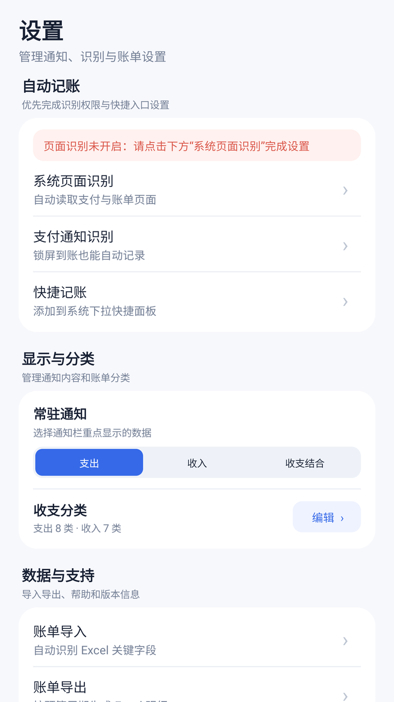
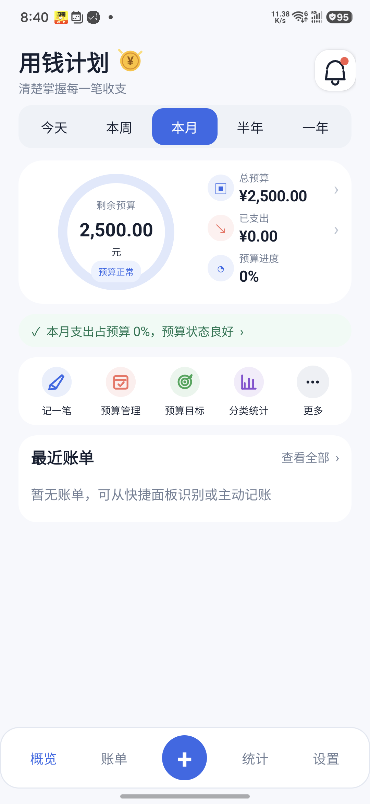
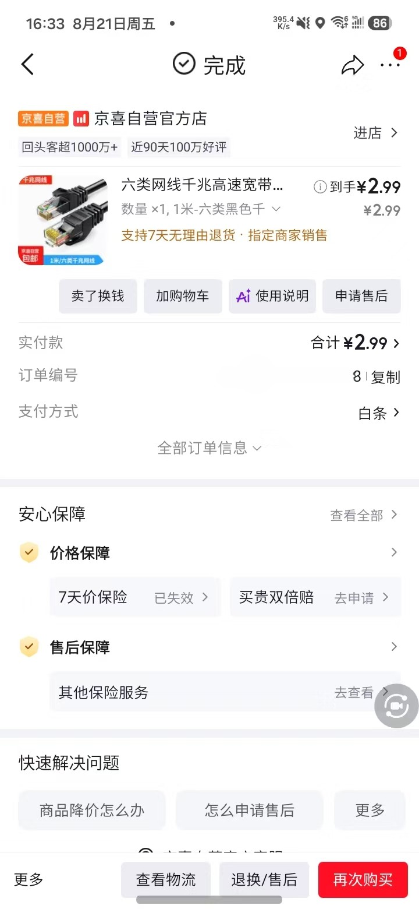

01自动识别
自动识别
支付完成就记下
支持微信、支付宝、京东及常见银行 App，重复账单自动去重。

一款安静、可靠的日常记账工具
用钱计划自动识别支付页面，实时更新预算。无需注册，不上传账单，花钱这件事，从此更有数。

从付款到记录，只差一次确认
打开微信、支付宝或银行 App 完成支付，用钱计划在得到授权后读取页面中的金额和语境，识别成功后轻轻提醒你。你始终可以编辑、删除或关闭自动识别。
支持微信、支付宝、京东及常见银行 App，重复账单自动去重。

按日、周、月或自定义周期设置预算，进度环和提醒让数字更清晰。
收入、支出、结余按周期汇总，分类占比和每日趋势帮你发现消费规律。

还有这些贴心功能
现金、转账或收入随手补充。
日、周、月、半年、一年和自定义日期。
按来源、金额快速找到记录。
桌面直接查看预算和结余。
接近额度或归零时及时提醒。
每条账单都由你掌控。
记账不是为了限制生活，
是为了把选择权留在自己手里。
你的账单，只属于你
不建立云端账户，不上传消费记录。
仅在主动授权后识别当前页面。
任何记录都可以修改或删除。
现在就开始
安装用钱计划，设置一个属于你的预算周期。
Android 8.0 及以上 · 安装包即将提供